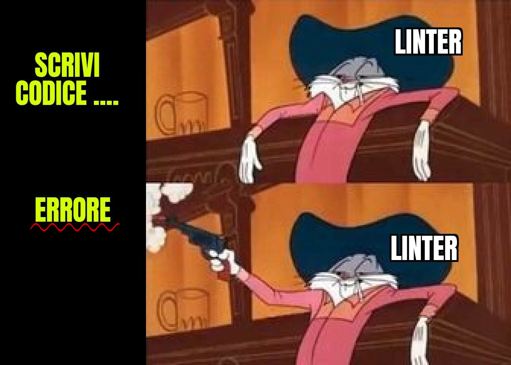
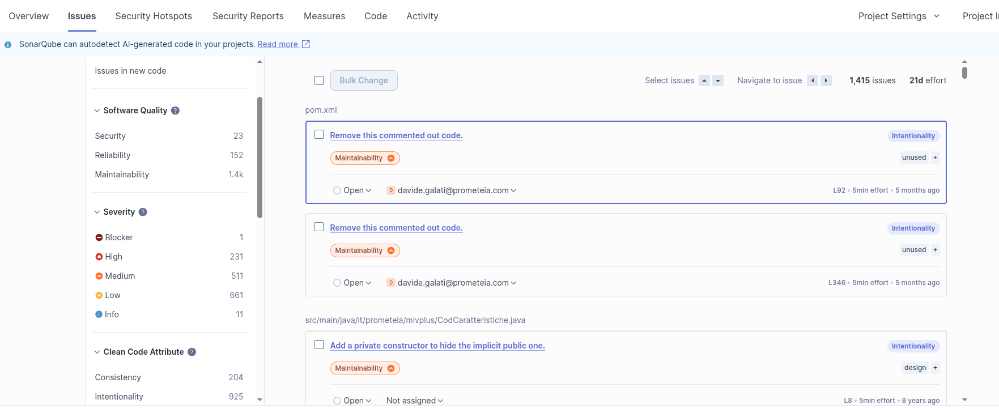
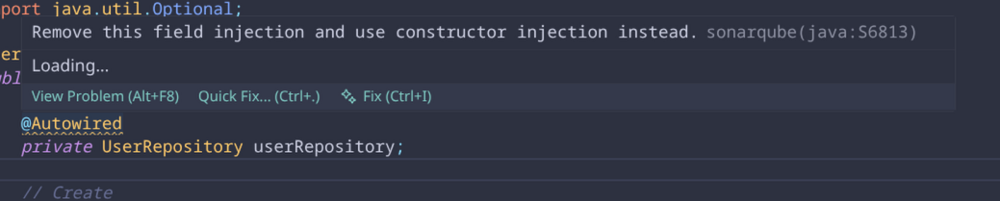
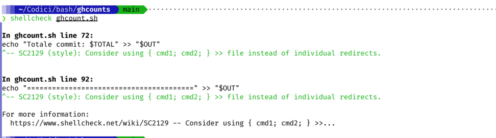

Il fatto che parta non è tutto
Editor Config

Prettier, ma anche Uglifier
Checkstyle

Linter

Test
Coverage
- Dopo un
mvn clean testè possibile trovare il report di Jacoco intarget/site/jacoco/index.html


Sonarqube


An extra: Codacy
Esempi tool



The End
Non è bello ciò che è bello, ma è bello ciò che parte!